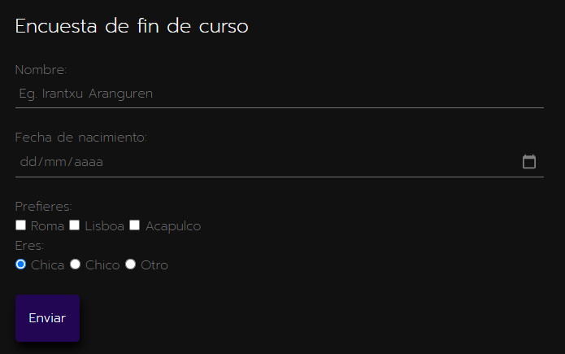

Primer formulario
Recogemos datos del usuario en distintos tipos de "input": text, date, number...
Visitar

Desarrollo web en entorno servidor
Recogemos datos del usuario en distintos tipos de "input": text, date, number...
VisitarEN CONSTRUCCIÓN
Falta:
• JSP: eliminar métodos en "calculando edad" y "yo y las cookies".
• JSP: estilo "calculadora básica" y "yo y las cookies".
• Cambiar código a "gestión de cookies".
• Implementar "notas".
• Implementar "buscador".
• Implementar "información".
• Actualizar contenidos "Readme.md".